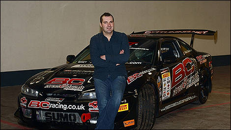
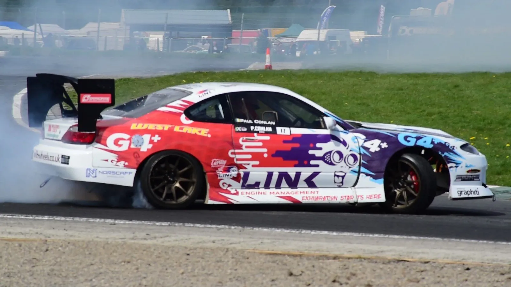

Paul Conlan


| Type de voiture |
Puissance (WHP) |
| Nissan Silvia S15 |
500 whp |
Paul Conlan évolue dans le European Drift Championship au volant d'une Nissan 240 SX S15. En 2012, ses quatre victoires
consécutives lui ont permis de décrocher le titre de champion.